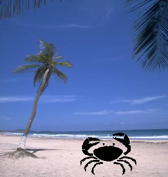

Como el cangrejo, apártate a un lado y deja pasar lo que te angustie y sea molesto para ti, procura no dejarte atropellar, en ti está la respuesta y las soluciones apropiadas, otros también pueden ser importantes, pero tu existes, retírate a tiempo evita los accidentes, comienza el verano, la pasión, las influencias de moda, costumbres y medio ambiente son atractivas pero peligrosas, observa tu alrededor, te rodean las tentaciones y el querer exponerte en aventuras, cuídate, eres frágil como un cangrejito, trata de cuidar tus acciones, te pueden llevar a destruir tu vida.

CANCER, EL CUARTO SIGNO DEL ZODÍACO O CONSTELACIÓN CÁNCER, sugiere, admira la naturaleza a tu servicio, reflexiona y retírate a tiempo de las tentaciones que te rodean, alégrate con todo lo que te rodea, utiliza tu potencial para triunfar, son días a tu servicio para admirar y comprender sus beneficios.